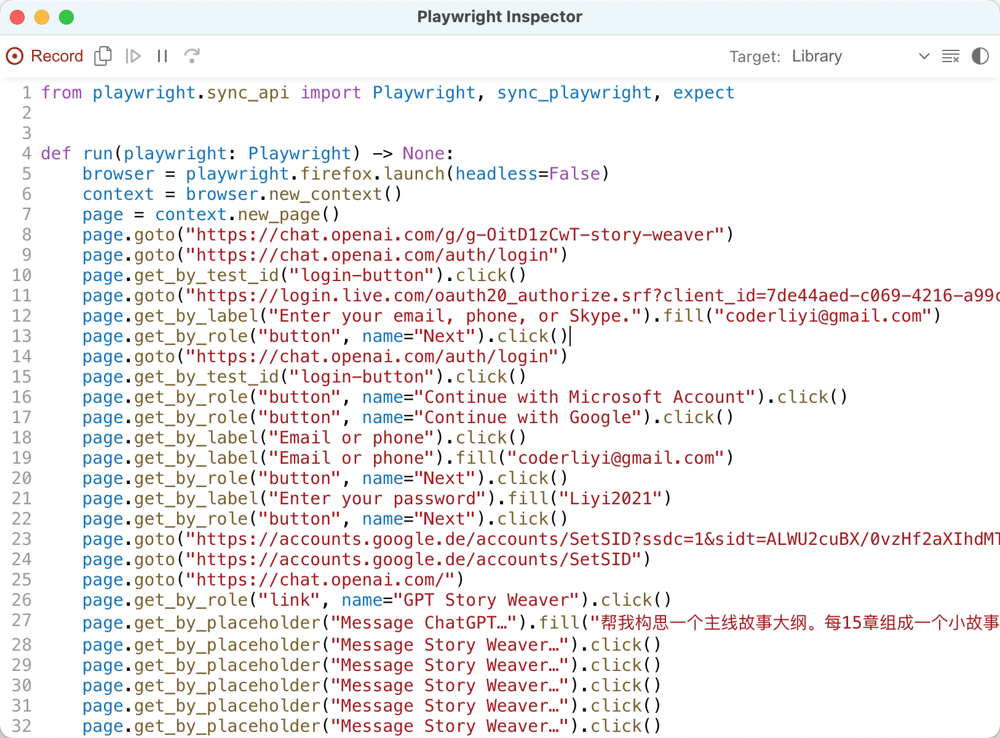

50 行 Python 代码调用私有 GPTs
今天聊一下 ChatGPT 的 GPTs。
以下内容首发于腾讯云开发者，是一篇应邀写的约稿，大概前后用了半个小时，仓促之下代码示例及行文措词都非常朴素。现实中真实的项目是绝不会如此简单的，但越简单的示例，越容易让读者抓住重点，这是我一直坚持的教程撰写风格。
我通过这个小示例想表达的是，通过 playwright + GPTs，我们可以做出许多有意思的应用，且成本低、安全、可塑性性强，就像打开了一道新世界的大门。在腾讯云开发者推送以后，我查看评论区，有一位读者说：
“我想开发一个依据需求（自然语言讲述）生成定制化GPT的GPT应用。”
看到这个评论，我就知道他已经打开属于他的新世界大门了。
通过以下示例，既可以调用 GPTs，也可以创建 GPTs，原理是一样的。甚至，如果有10个人要创建自己的GPTs，都没有必要购买10个 ChatGPT Plus 会员帐号，只需要一个帐号，就可以给10个人使用，且每个人的 GPTs 都是独立的、隔离的（因为GPTs是私有发布）。你明白了吗？
如果你不想花美金购买会员帐号，也不想学习编程，只想拥有这样一个免费的私人 GPTs，在【艺述论】公众号回复【10008】，扫码入群等待，马上发车。
11 月 6 日，OpenAI 举办了自己的第一次开发者春晚，并现场推出了新模型 GPT-4 Turbo，及 Plus 会员用户可以基于新模型进行功能自定义的 GPTs。
GPTs 是什么？
简单理解，它就是一个充许用户不使用任何编程技术、不需要调用 ChatGPT API 即可完成训练的一个 AI。有人说，我不需要 GPTs，我用 LangChain+Agent+ChatGPT API 或其它大语言模型的 API，也能实现一个自定义的 GPT。
没错，这么理解是对的！但不是所有人都会编程，也不是所有人都知道 LangChain 如何调用以及 AI Agent 如何开发。ChatGPT 适时推出的 GPTs，它的目标用户群体是广大的不会编程的用户。据 OpenAI 宣称，ChatGPT 周活已经达到了 1 亿，预测不久，几百万个甚至几千万个 GPTs 将出现在 GPT Store上。
笔者在这篇文章“不用编码，也不用会写严格的提示，创建自己的第一个 GPT”中已经详细介绍过徒手创建 GPTs 的方法，很简单，整个过程只需要七步，简单设置一下，再上传一些文件，大功即可告成。在发布的时候，还可以选择私有、分享可用及完全公开。
如下所示，这是笔者创建的 GPTs————Story Weaver，它是一个私有的GPTs。

对于我们不想让别人看到的，只想让我们自己或团队成员使用的模型，我们肯定要发布为私有。对于私有的 GPTs，如果我们还想实现在本地自如地调用、并且是程序自动化调用，我们应该怎么做呢？
有人可能会想：“我们可以使用 OpenAI 官方提供的 API。”
很抱歉，目前 OpenAI 还没有公布这样的接口；即使以后有，它极有可能也是需要付费的。我们购买 Plus 会员已经花了钱，在调用自己创建的 GPTs 的时候，为什么还要花钱？
本篇笔者就用银河系最通俗易用的编程语言————Python，用不到 50 行的总代码，带你打开新世界大门。不需要额外付费，也不需要调用任何 API，更不需要设置什么 API Token，就可以自动化调用我们自己创建的 GPTs。
在创建 GPTs 的时候，数据文件是我们提供的，消费代码也是在我们本地运行的，这就相当于我们在本地借用了 ChatGPT 强大的大语言模型能力，且成本低廉、方法又简单。
准备工作
如果你想顺利运行稍后笔者提供的 Python 示例，你需要准备以下这些条件：
- 一个附带 Plus 会员的 ChatGPT 帐号
- 本地电脑已经安装了 Python 3.7 或以上的版本
有人可能说：“访问 ChatGPT 需要翻墙，我不想翻墙！”
没问题，购买一台腾讯云美区云主机，选择 Windows 系统，在上面进行项目操作就可以了。不需要翻墙，速度还是杠杠的。
安装类库
稍后我们需要用到两个类库：pyperclip 与 playwright，我们需要在终端环境里依次安装它们：
pip install pyperclip
pip install playwright && playwright install
注意：在安装完 playwright 以后，别忘记运行 playwright install，这一步是安装 playwright 运行时需要的浏览器组件。即使是我们本地已经安装了相关的浏览器，这一步也必不可少。
简单介绍一下这两个类库。pyperclip 是处理剪切板数据的，允许我们访问本地剪切板并将数据导出，这个类库没什么好说的，许多开发网页智能机器人的工程师们都使用过。
playwright 是大大鼎鼎的自动化测试框架，它由 Microsoft 开发，提供了一套简单而强大的 API，可以自动化运行基于 Chromium、Firefox 和 WebKit 浏览器的测试程序。与 playwright 齐名的另一个类似框架是 selenium，前者与后者相比，前者拥有更加现代化的 API、更快的响应速度和更强大的功能，所以笔者选择了前者。
一个自动化测试框架跟我们要做的事情有什么关系呢？我们为什么要安装它？
当然有关系！很多基于浏览器的自动化智能机器人，例如智能网页爬虫，都是 playwright 实现的。你明白了吗，playwright 不仅可以用于测试、代替测试工程师做一些重复性高的测试工作，还可以代替人做一些相对复杂的普通网页操作。
稍后我们在浏览器上打开自定义 GPTs 的网址、输入 Prompt、获取查询结果，这些操作都可以由 playwright 代替我们实现。本地程序的自动化是借由 playwright 实现的。
持久化登录
使用 playwright 开发智能网页机器人应用，有一个问题是无法避免的，这个问题就是用户验证。一般有以下两个解决思路：
1）第一个思路，自动监测网页状态并登录。
当未登录时，使用本地预先记录的帐号跳转到登录页面实现自动登录，并在本地缓存登录后的 cookies。
本地写入 cookies 的代码大概是这样的：
cookies = context.cookies()
print(page.title())
f = open('cookies.json', 'w')
json.dump(cookies, f)
读取 cookies 以避免重复登录的代码是这样的：
def loadCookies(cookief):
cookiefile = open(cookief, 'r')
cookie_list = json.load(cookiefile) # json读取cookies
cookiefile.close()
return cookie_list
...
context = browser.new_context()
cookiefiles = ['cookies.json']
for cookiefile in cookiefiles:
context.add_cookies(loadCookies(cookiefile))
这两段代码今天我们并不打算使用，你了解一下就好。这种方式还需要处理网页验证码，以及在 cookies 过期后还需要重新登录，比较复杂，除非迫不得已，我们不采用这种思路。
2）第二个思路是持久化登录。
简单讲，就是专门在硬盘上辟出一个空间给当前的网页机器人程序使用，运行期间产生的 cookies、图片等数据全部缓存在该目录下，由于 cookies 是缓存的，便不需要频繁登录。我们采用这种方法。
首先创建一个项目目录，例如 browser_ai，在该目录下再创建一个 gpts_firefox_dir 目录，用作浏览器的持久化缓存目录。
现在祭出我们的第一部分 Python 代码，query_gpts.py 文件第一部分：
import time
import pyperclip
from playwright.sync_api import sync_playwright
def login():
with sync_playwright() as p:
context = p.firefox.launch_persistent_context(
'./gpts_firefox_dir',
headless=False,
slow_mo=500
)
page = context.pages[0]
page.goto('https://chat.openai.com/')
login()
简单解释一下这段 Python 代码：
- 前 3 行是类库引用。time 是内置的，不需要安装，可以直接引用。pyperclip 与 playwright 我们已经安装过了，可以直接引用，playwright.sync_api 是 playwright 的同步模块，使用同步模式，在编写网页机器人时可以让我们轻松许多。
- 第 5 行～第 13 行定义了函数 login，这个函数我们主要是为了在本地持久化目录下缓存 cookies 信息的。第 7 行，firefox 代表使用 Firefox 浏览器组件，这个地方还可以选择 chromium 或 webkit，相信我，不要选择 chromium，虽然它是大名鼎鼎的谷歌开源的浏览器项目，但它早被黑客们玩坏了，开发网页机器人就使用 firefox 吧，这个选项能让你节省许多时间。不要谢我，我是活雷锋。
- 还是第 7 行，launch_persistent_context 代表从本地持久化目录启动浏览器。第 8 行，第一个参数 gpts_firefox_dir 便是我们先前创建的目录，在这里用上了。
- 第 9 行，headless 等于 False，我们才可以在运行时看到浏览器的 UI。如果想让浏览器组件在后台静默运行，将此处设置为 True 即可。测试阶段，最好设置为 True。不要问我为什么，如果你调试过网页智能机器人程序中的元素选择，就明白我在说什么了。
- 第 12 行，是取到浏览器的第一个打开的标签页。第 13 行，是打开一个网址。
其它代码没有什么好讲的，使用python query_gpts.py指令启动，在打开的浏览器中登录自己的 ChatGPT 会员帐号，然后关闭程序。login 函数的使命就已经完成了。
调用 GPTs
下面真正的代码来了，query_gpts.py 文件第二部分：
...
def query():
with sync_playwright() as p:
browser = p.firefox.launch_persistent_context(
'./gpts_firefox_dir',
headless=False,
slow_mo=500
)
page = browser.pages[0]
# 这是私有的，要替换成你自己的GPTs URL
page.goto('https://chat.openai.com/g/g-OitD1zCwT-story-weaver')
time.sleep(2)
page.query_selector("#prompt-textarea").fill("告诉我，你的知识库截止日期是？")
page.wait_for_selector('button[data-testid="send-button"]').click()
time.sleep(10)
copy_button_selector = 'button.text-xs.dark\\:hover\\:text-gray-200'
copy_buttons = page.query_selector_all(copy_button_selector)
(copy_buttons[len(copy_buttons)-1]).click()
time.sleep(1)
clipboard_content = pyperclip.paste()
# 打印剪贴板内容
print(clipboard_content)
str = 'y'
while str == 'y':
str = input('等待中，是否继续等待？y/n。\n\n请输入：') # 控制休眠时间
page.close()
browser.close()
query()
这部分代码都干了啥？稍微解释一下吧：
- 第 4 行～第 8 行，前面介绍过了。
- 第 11 行，打开自定义 GPTs 的网址，注意，示例里是我自己的网址，并且是私有的，你是访问不到的。你需要在 ChatGPT 上先创建自己的 GPTs，然后将此处换成自己的地址。关于如何创建自己的 GPTs，看这里：不用编码，也不用会写严格的提示，创建自己的第一个 GPT。
- 第 12 行，这里有一个 sleep 操作，为什么要 sleep？我们引用的是 playwright 同步模块，第 11 行代码执行完，代表网址已经打开了，为什么还要 sleep？是报复老板让我 996 故意消耗老板的电费吗？当然不是！网址成功打开并不代表页面元素全部加载完成，在开发网页智能机器人时尤其要注意这一点，否则，你可能找不到你要查询的页面元素，因为你要的元素还在内存里，还没有渲染出来呢。打个比方，好比今天你去教官结婚，但是你的新娘还在她妈妈的肚子里。
- 第 13 行，query_selector 用于选择页面上的一个元素，它的参数是 CSS 选择器，参数要求与 document.querySelector 相似。fill 是填写文本，写的是我们想问的问题，这里为了使程序简单，我将问题写死了，事实上这个问题可以来自于数据库，也可以来自于用户输入，它的来源是灵活可控的。
- 第 14 行，wait_for_selector 也是选择元素，它与 query_selector 不同的是，它会等待网页出现这个元素————如果这个元素暂时没有的话。wait_for_selector 相比 query_selector 是有优势的，使用它不用显式等待，你看我在这行代码前面就没有使用 sleep。那么为什么在第 12 行使用呢，为什么第 13 行不使用 wait_for_selector 呢？不为什么，为了演示，为了告诉你这两个方法之间的区别。
- 第 14 行，是单击了页面中的“发送”按钮，ChatGPT 背后的大语言模型开始工作了。第 15 行，这里要 sleep 一下，ChatGPT 的反应需要时间。
- 第 17 行～第 19 行，这里是为了查询页面上出现的“拷贝”按钮，并单击它。由于多次互动后，这类按钮会出现多个，所以取了最后一个。
- 第 21 行，这是从剪切板获取数据，我们提前安装的 pyperclip 终于发挥使用了。
程序完成后，使用python query_gpts.py指令运行，效果如下：

最后一步，程序中关于y的那部分while循环，是为了控制程序不退出。因为程序退出后，浏览器就关闭了，我们也没有办法进一步查看和操作界面了。
如果参数 headless 等于 Flase，能看到浏览器界面，运行效果是这样的：

GPT-4 Turbo 发布后，很多通过第三方壳子应用使用 ChatGPT 服务的用户，怀疑自己用的是假 GPT-4，这时候可以使用上面这条提示问知识库截止日期，正准答案是 2023 年 4 月。
由 codegen 反向生成代码
示例里面有一个地方的代码，在网页机器人开发中是公认的麻烦。例如，在 query 函数中，第 13 行、第 14 行、第 17 行，这三处的选择器代码并不容易写，尤其是最后一个。
page.query_selector("#prompt-textarea").fill("告诉我，你的知识库截止日期是？")
page.wait_for_selector('button[data-testid="send-button"]').click()
copy_button_selector = 'button.text-xs.dark\\:hover\\:text-gray-200'
为了解决这类问题，提升生产效率，playwright 提供了一个“由操作生成代码”的功能。以我们访问的 GPTs 网址为例，指令如下：
playwright codegen --browser firefox https://chat.openai.com/g/g-OitD1zCwT-story-weaver
codegen 这个子程序可以帮助我们生成带有大量选择器的代码。参数 browser 是指定浏览器组件类型，这个参数其实无所谓，指不指定并不会影响目标页面上的元素。
codegen 指令会打开一个浏览器，我们在上面操作一番，在小窗口中便能看到生成的代码，如下所示：

生成的代码很粗犷，一般情况下并不能直接使用，但它可以帮助我们定位元素，获取元素的选择器写法。这是 codegen 指令存在的作用。
回顾
最后总结一下。
这个示例很简单，没有输入，也没有输出————输出就是简单的打印，将 ChatGPT 返回的内容直接在终端中打印了一下。对于登录，我们也采用了最简单的方法————手动登录。在实际项目中，这些问题都需要细化。
通过 playwright，我们实现了在本地调用远程私有 GPTs 的目的，数据是我们的，程序也是我们的，我们只是借用了 ChatGPT 的大语言模型能力。并且也不需要额外花费 API 调用费用，这是很划算的。基于本文示例，你还有哪些想法，想开发什么样的智能应用呢？欢迎留言讨论。
最后说一下示例代码，完整的示例可以在公众号“艺述论”回复 10008 下载。

评论